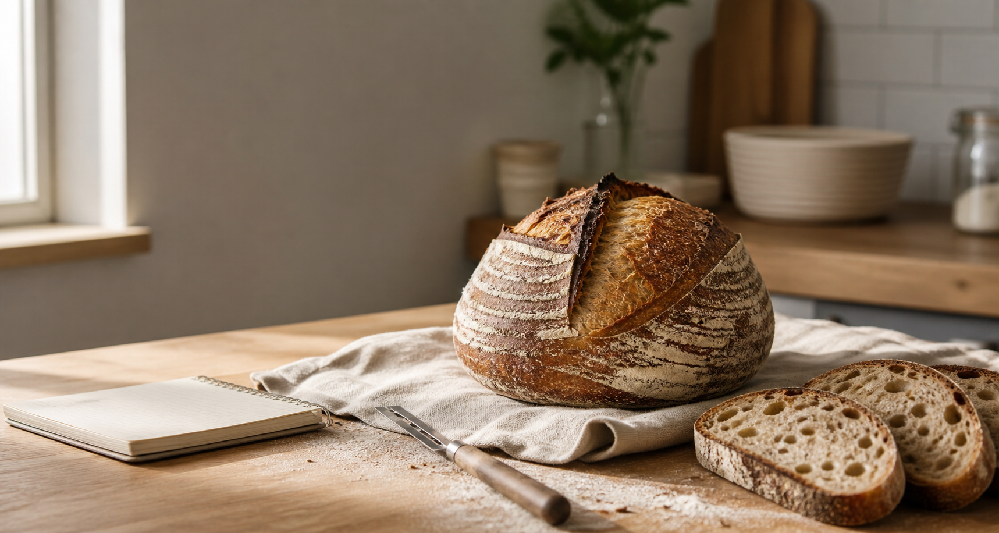

Free tools for better loaves
Make sourdough feel less like guesswork.
Plan dough weight, hydration, starter feeds and bulk fermentation with simple calculators, then use the long-form guides to understand what the numbers mean in a real kitchen.

Featured calculator
Dough builder
Why this is useful
Tools people use, articles people stay for.
The calculators answer quick search intent. The guides go deeper on beginner questions like hydration, starter percentage, feeding ratios and bulk fermentation timing.
Popular tools
Sourdough calculators
Use these before mixing dough, refreshing a starter, scaling a recipe, or deciding when bulk fermentation might finish.
Dough calculator
Calculate water, starter, salt and total dough from baker percentages.
StarterStarter feeding
Work out 1:1:1, 1:2:2, 1:5:5 and custom feeding ratios.
TimingBulk estimator
Estimate fermentation windows from room temperature and starter strength.
ScalingRecipe scaler
Resize a trusted formula without losing the original proportions.
Long-form guides
Search-friendly sourdough articles
Each guide answers a specific question clearly, then points readers to a calculator that helps them act on it.
What is sourdough hydration?
A practical explanation of 60%, 70% and 80% hydration dough.
Starter %How much starter should I use?
When to use 10%, 20% or 30% starter and how it changes timing.
FeedingSourdough feeding ratios explained
How 1:1:1, 1:2:2 and 1:5:5 feeds behave in real life.
BulkBulk fermentation times chart
Temperature-based timing ranges plus the dough signs that matter.
Built-in helper
Quick answers while you bake
The helper gives rule-based answers for common problems like sticky dough, weak starter, bulk timing and starter amounts.
Open helper